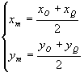
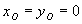
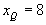
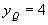
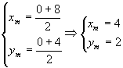
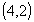

As coordenadas do ponto médio do segmento OQ é dado por:

O ponto O é a origem, portanto

e do item 01 sabemos que
e
; substituindo estes valores nas expressões anteriores teremos:
Portanto o ponto médio de OQ é:

.
Conclusão: O item 02 é verdadeiro.
Voltar